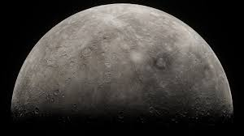
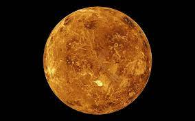
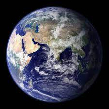
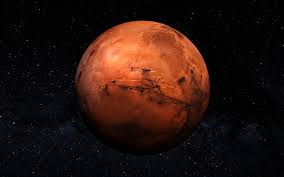
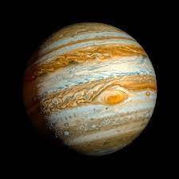
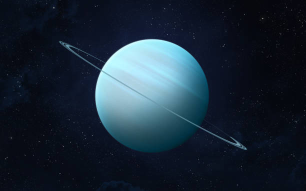
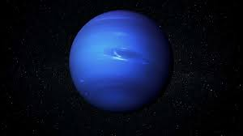

SOLAR SYSTEM
INFORMATION ABOUT PLANETS
The Solar System is a gravitationally bound system of the Sun and the objects that orbit it.
The largest of these objects are the eight planets, which in order from the Sun are four
terrestrial planets (Mercury, Venus, Earth and Mars); two gas giants (Jupiter and Saturn);
and two ice giants (Uranus and Neptune) 1. The four outer planets, also called giant planets
or Jovian planets, collectively make up 99% of the mass known to orbit the Sun. Jupiter and
Saturn are together more than 400 times the mass of Earth and consist overwhelmingly of the
gases hydrogen and helium, hence their designation as gas giants .
The Sun is the star at the center of the Solar System. It is a nearly perfect sphere of hot
plasma, with internal convective motion that generates a magnetic field via a dynamo process.
It is by far the most important source of energy for life on Earth. Its diameter is about 109
times that of Earth, and its mass is about 330,000 times that of Earth, accounting for about
99.86% of the total mass of the Solar System
PLANETS

Mercury: The smallest planet in the Solar System and the closest to the Sun. It has no moons and no atmosphere

Venus: is the second planet from the Sun and is the second largest terrestrial planet. It has a thick atmosphere
that traps heat and makes Venus very hot

Earth: is the third planet from the Sun and is the only planet known to support life

Mars: is a cold desert world that is half the size of Earth. It has a thin atmosphere made of carbon dioxide, nitrogen, and argon

Jupiter: is the largest planet in the solar system and is primarily composed of hydrogen (90% by volume) and helium. It has a faint
planetary ring system and a powerful magnetosphere, and forms a system of 95 known moons and probably many more, including the four large
moons discovered by Galileo Galilei in 1610: Io, Europa, Ganymede, and Callisto

Saturn:is the sixth planet from the Sun and the second-largest planet in our solar system. It is a gas giant with an average radius
of about nine-and-a-half times that of Earth. It has a faint planetary ring system and a powerful magnetosphere, and forms a system of 95
known moons and probably many more

Uranus is the seventh planet from the Sun and is blue-green in color due to large amounts of methane in its atmosphere. It has a unique
tilt that makes it appear to spin on its side

Neptune is the eighth planet from the Sun and is the fourth-largest planet in the Solar System by diameter. It is an ice giant, similar
to a gas giant, and is made of a thick soup of water, ammonia, and methane flowing over a solid core about the size of Earth

PLESE!GIVE THE RATINGS DEPENDING ON THE PROJECT